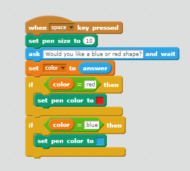
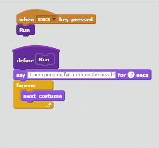
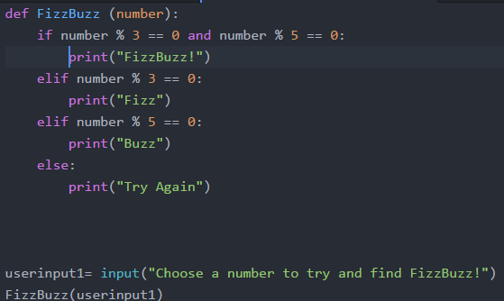
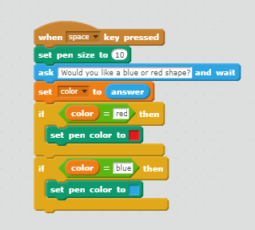
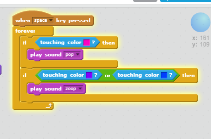
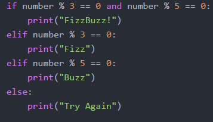
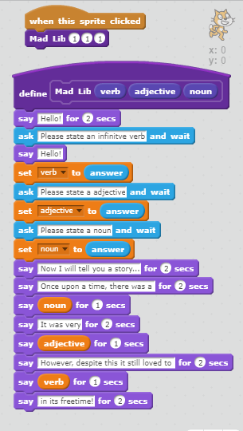

The core four are an effective and easy way to remeber the different part of code!
There are LOOPS, VARIABLES, CONDITIONALS, and FUNCTIONS. All of these components work together to build up your code.
Loops allow you to repeat a certain section of code either a certain amoutn of times, until something is "accomplished", or forever.


Variales are similar to a placeholder. They store the information assigned to them and you can call this information by using the variable name.

Conditionals are and effective way to execute and action IF something else happens. An easy way to remeber them is as an "if statement"


Functions are used to shorten code. Once you name a function you can attach large strand of code to it, and rather than retyping the code to use again, you only need to call the function.
